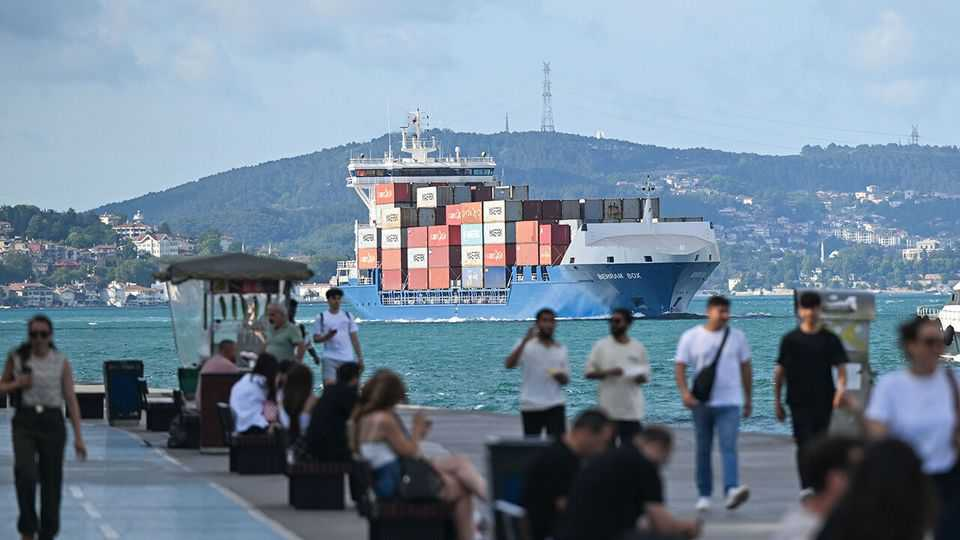
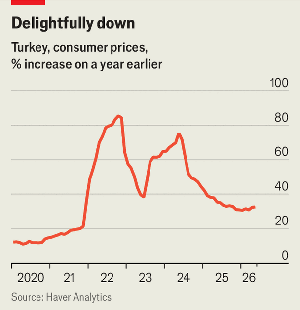

Turkey’s economic plan to win from the Iran war
The country is a case study in the spillovers of conflict—both positive and negative
July 2nd 2026

WAR LEAVES behind economic wreckage. Over the past four months it has caused $600bn-worth of damage to Iran, according to the IMF, and up to 7% of the workforce have lost their jobs. The economies of Iran’s richer Gulf neighbours have shrunk and the conflict may knock two percentage points off GDP growth in the broader Middle East this year.
For Turkey, a large economy perched between the volatile region and Europe, the fighting in the Gulf has been a mixed blessing. Soaring oil prices pushed monthly inflation above 4% in April for only the second time in a year. The central bank burned through more than half of foreign reserves propping up the lira. Yet trouble next door is also an opportunity. “The Gulf has lost a lot of business in the past few months,” says a finance-ministry official, “and we think we could take some of it.”
Istanbul, and Turkey more broadly, is already becoming a commercial roundabout for business between Central Asia, the Middle East and Europe—shabbier than the Gulf’s, but bustling. Some shoppers browsing the boutiques in the city’s posh Nisantasi neighbourhood say they would be in Dubai were it not for the war.
Across the Bosporus, Turkey’s third-biggest cargo terminal is nearly overflowing. Dock workers, on a cigarette break before overtime, say volumes have tripled since the Strait of Hormuz closed. Turkish ports have never handled this many shipments in spring. More fossil fuels are flowing through pipelines that cross Turkey, connecting Europe to energy suppliers. Flows through the Kirkuk-Ceyhan oil pipeline from Iraq are set to be three times higher in August than in April.
Turkey wants more. Iran’s chokehold over the strait has revived plans for at least three railways and road networks from the Middle East to Europe. All, officials hope, will attract foreign investments worth billions of dollars. The Hejaz Railway, for instance, would carry crude oil and passengers from Saudi Arabia. Officials insist more visitors, like those shopping in Istanbul, will soon transform industries from tourism to entertainment. Turkey’s defence industry, which has been pumped with state handouts in recent years, exported roughly as many arms as Germany in 2025. Since February, according to two Turkish officials, three Gulf countries have started negotiations for arms deals.
Another big prize for Turkey would be to attract investors displaced from the Gulf. The Istanbul Financial Centre (IFC), a gleaming island of glass towers which opened in 2023 to house global financial firms, was until February home only to state-owned banks and regulators. Now Ahmet Ihsan Erdem, the IFC’s boss, and Mehmet Simsek, Turkey’s finance minister, are boasting of 40 Gulf banks and consultancies seeking to move in. In May the government offered tax breaks for foreigners (and special perks for IFC residents).

Under Mr Simsek and the equally reasonable Fatih Karahan, who leads the central bank, Turkey’s economic management is no longer as batty as before (a few years ago President Recep Tayyip Erdogan insisted that higher interest rates caused inflation). In 2025 growth was a solid 3.6% and annual inflation fell by 24 percentage points to 35% (see chart). Since February tourists and cargo have helped cushion the energy shock, and the April ceasefire tamed price rises to just 1.7% in May.
Yet Messrs Simsek and Karahan have their work cut out. The war has strained Turkey’s budget and balance of payments. Tax breaks on fuel, which have helped contain high energy prices, could cost 0.6% of GDP. Between January and April foreign reserves fell from $79bn to $18bn, as the central bank sold dollars in pursuit of a stable lira. Although reserves have now stabilised, selling more of them without earlier replenishment could lead to a further loss of faith in the central bank and to inflation that eventually forces the government to impose capital controls.
Some Western financiers fear a return to fiscal and monetary folly—not least because the sensible Mr Simsek has reportedly fallen out with Mr Erdogan. Foreigners have withdrawn at least $10bn from Turkey since the Iran war began.
Many Gulf escapees are choosing other destinations. Hedge-fund managers fleeing Dubai prefer Miami and Milan to Istanbul. High-rolling executives in search of good schools for their offspring favour London or Geneva. Judging by conversations with a dozen of the IFC’s new residents, most employ fewer than 50 people in Istanbul. Few foreign shoppers strolling around Nistantasi say they plan to return. A boom in logistics and shipping, which make up less than a tenth of the Turkish economy, has limited impact by itself.
War next door affords Turkey a chance to shed its reputation as an economic basket case. But it will take more than that to turn it into an economic marvel.■
For more expert analysis of the biggest stories in economics, finance and markets, sign up to Money Talks, our weekly subscriber-only newsletter.